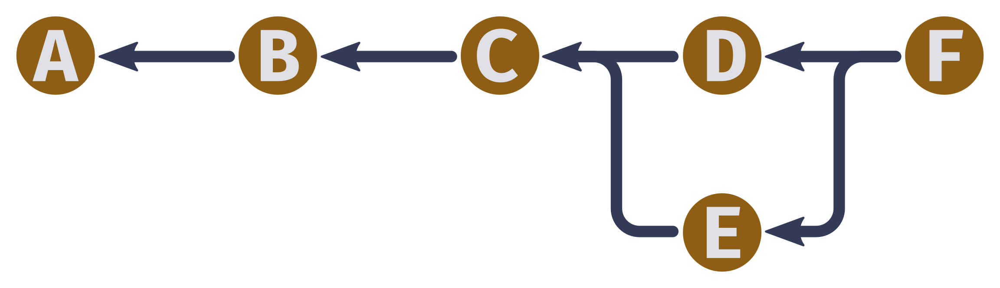

Gitting Proposed
Jed Rembold
May 28, 2024
Announcements
- Websites are up and running: both Canvas and main website
- I’m going to try to keep announcements synchronized between Discord and Canvas, but will usually post to Discord first
- I am going to be gone next week!
- My brother won the hiking permit lottery so we’ll be backpacking in to Havasu Falls
- Ruthie will be running the first half of class
- Calvin will be covering for me if you have questions or issues in the latter half, but it will otherwise be open for you to make progress on your data acquisition
- Due on Monday night:
- Project Proposal!
The Project Proposal
The Guide
- The official project guide has been posted here
- 2-3 pages covering:
- Title
- Research Question
- Motivation
- Data
- Methodology requirements
- How you want to organize is up to you, but it should be full prose: not just bullet points of sentence fragments.
- Export as PDF and upload to your team working repository
The Example
- Assuming I found time, I have written an example project proposal available here
- Its format is just one I found convenient and aesthetic while
covering all the requirements.
- It isn’t the only way to meet the requirements, it is just A way
- Please let me know if you find issues or have questions about it: I’ve passed over it a few times but it was still written over a single day.
Gittin’ Good
Git

Understanding Git
- Git is a form of version-control software
- Git exists independently of GitHub
- Best of think of GitHub as just one possible site where you can store Git repositories remotely
- Git is a bit notorious for having commands that are perhaps unintuitive or overly complicated
- Goal for today is to:
- Get you some understanding of what is happening “under the hood” so the commands have some meaning attached to them
- Go over the basic commands and workflows
- Explain how to connect GitHub and Git for easier collaboration
Version Control
- It can be useful to think of version control as a history of what happens in a particular folder
- Imagine a series of “snapshots” of what the contents of a directory look like
- Means you essentially need to store two things:
- The contents of the snapshot (folders and files)
- Git refers to these as trees and blobs, respectively
- How the latest snapshot is related to previous snapshots
- To be able to trace back a full history, you need to know what the previous snapshot was
- Git stores this information in what it calls a commit
- The contents of the snapshot (folders and files)
Trees and Blobs
- Trees can be envisioned as a mapping from a directory name to a list of other trees or blobs inside
- Blobs are just a sequence of bytes that store their contents
Commits

- Commits contain several pieces of information:
- A list of the parent (preceding) commits: Frequently just one, but can be more!
- The author of the commit
- When the commit occurred
- A message describing the commit
- The snapshot information itself, which is a tree
Objects
- Git thinks of all three of these things (trees, blobs, and commits) as more general objects
- Git maintains a mapping of all objects, which use the hash
of the object as the key to look up the specific object contents in
memory
- Sha1 hashes are used, and thus are comprised of 40 hexadecimal characters
- This hash is important! In any object, when it contains information about another object, it just contains the hash of that object, not the actual data
- You’ll be able to frequently see (and use) these hashes when using Git
Getting Started
If you are just getting started tracking a folder, you need to initialize Git in that folder
git init- This might not look like it does anything initially, but will add a
.gitfolder to your folder, where Git stores all its content
- This might not look like it does anything initially, but will add a
Perhaps the most used command will be to check the current status of Git in your folder
git statuswhich will print out information regarding the current state of the files
Making a Snapshot
- Taking a “snapshot” is actually a two step process in Git
- Gives more flexibility that you might not want everything in the folder to be part of the snapshot
- Step 1: Staging the desired files
- Staging a file says “I want this file to be part of the next snapshot”
- Done with
git add {file/folder name}- If given a folder instead of a file, adds everything within that folder
- Step 2: Taking the snapshot of the staged files
- Actually create the commit using
git commit - A Vim window will open where you can type a short descriptive message, and then save and exit
- Actually create the commit using
References
- Referring to objects through hashes is precise, but not hugely easy for us mere humans to remember
- Git will also maintain a list of references which are more human labels that map to a specific hash
- The Git history can be added to but not otherwise changed, and is
thus immutable
- “You can’t change the past”
- References can be changed though, to point to new hashes
Seeing the history
Git has a logging function that will allow you to see information about your repository history
git logThere are a ton of customizations you can do to this output, but some include
--allshows the log of all branches, not just the current--graphshows the connecting lines between commits, including branching--decorateprints short names of references--onelinecompresses snapshot output to fit on a single line for compactness
Seeing the differences
Sometimes you might need to see what has changed between two states
- This can be between the current state and the last commit or between two different commits
The Git
diffcommand will display an output of all changes between two pointsgit diff {initial} {final} {filename}- By default,
{initial}is taken to be the last commit and{final}to be the current state of the files - If
{filename}is not given, it will show diffs on all files that have changed
- By default,
Checkout Time
A history is of limited use if you can’t backtrack or move through it
The Git
checkoutcommand allows you to “move” what you are currently looking at to a different commitgit checkout {desired commit}- You can use either a piece of the hash to indicate the commit or a reference name
Note that checking out a past commit actually changes the contents of your folder to reflect what it looked like at that time!
- This can be a good/bad thing if you have current edits you were working on that haven’t been committed
Branching
- One powerful feature of Git is that it can allow branching histories
- Most often, these are eventually merged back together into a final product
- All multiple people to work on a project at the same time without constantly stepping on each other’s toes
- The
git branchcommand will take care of all our branching needsWithout anything else, it will just print out a current listing of all branches and which is currently checked out
To create a new branch, you include a name for the new branch at the end of the command
git branch my_new_branch
Merging
Merging is the act of creating a new commit based on the histories of multiple different commits
Git is pretty good at doing this intelligently, and often will just “figure things out”
- If it has an issue, it will ask you to resolve it manually
To merge, have checked out the branch you want to merge into, and then
git merge {branch to merge into current}- If all goes well, you’ll be prompted for a new commit message for the new merged commit
- If there was an unresolvable conflict, Git will tell you where and ask you to fix it manually before adding and committing
Dealing with Remotes
So far we have great ways to manage our local histories, but still not great ways to collaborate
Git has a concept of remotes, which are basically just copies of a repository kept on a (most of the time) remote server
Git works locally 99% of the time, so there are special commands to use when you want to “sync” contents between your local repository and the remote repository
Before either can be done, we need to inform Git of where the remote for a given repository exists
git remote add {name} {url}{name}is by conventionoriginunless you are connecting multiple remotes{url}is the address where that remote can be reached
Upload Changes to a Remote
In order for the remote to be useful, we need to let it know what we have done locally
Git calls this pushing changes to the remote
git push {remote name} {local branch}:{remote branch}Typing all that in can get old, so we can specify it once by saying
git branch --set-upstream-to={remote name}/{remote branch}at which point in the future we could just do
git push
Getting the latest updates
On multi-computer setups, it is possible that another system uploaded content to the remote that you do not yet have locally
- Git does not check for this sort of thing automatically! You need to be clear about checking for an update
Git calls this fetching from the remote
git fetch- If there is more than one remote, you can specify the remote after
fetch
- If there is more than one remote, you can specify the remote after
Gets the remote information, but does not merge it with your local content
To do both at the same time, you can do
git pull
Cloning
Often, you might be given a remote address initially, and need to copy that repository over to your local system
Git calls this cloning a repository
git clone {remote url} {directory name}{remote url}is the url of where the remote lives{directory name}is the local directory you want to copy that remote repository into- If not given, it will create a directory with the same name as the remote repository
This automatically sets up a remote for the new local git repository
Break Time
Team Proposal Work
Team work
- The rest of the evening is set aside for you to work on your project proposal with your team
- My recommendations for before you leave:
- Have your research question worked out
- Have your data sources pinned down